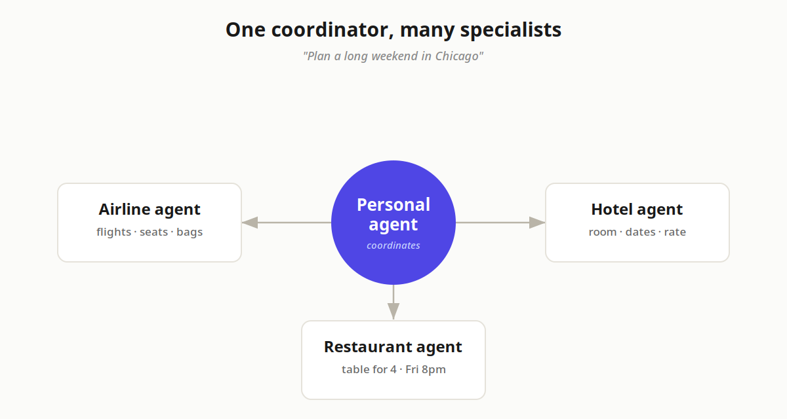
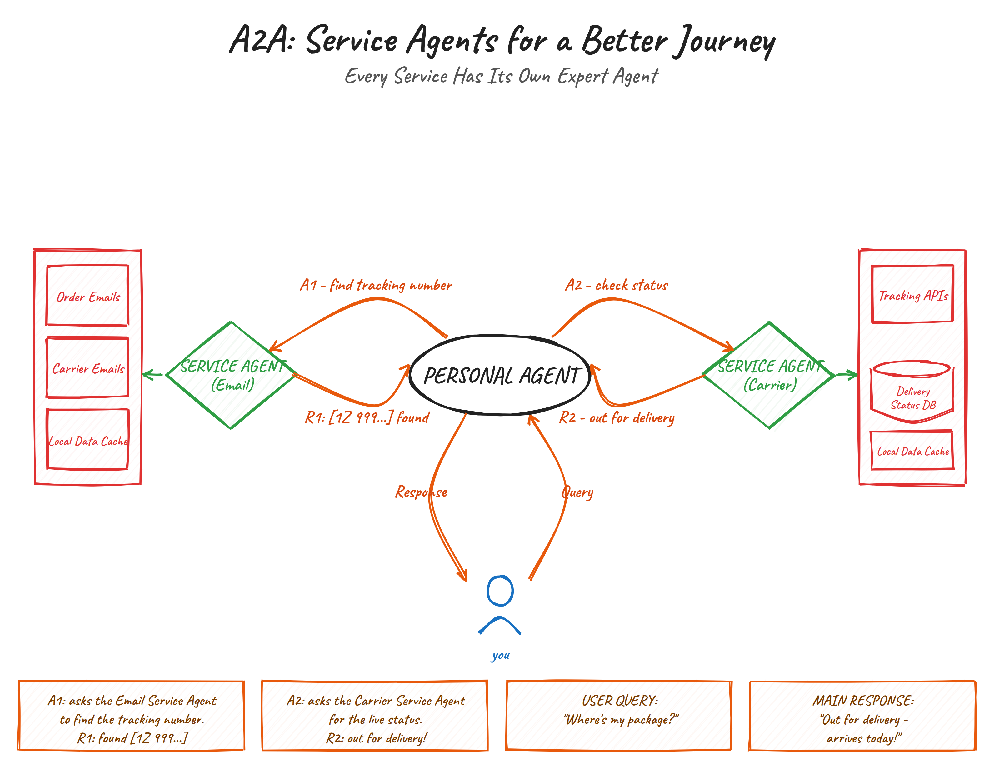
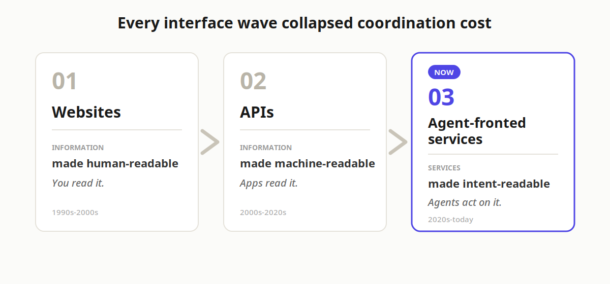

Essay
Every Service Needs an Agent
Why companies will have to build agent-fronted services, complementary to APIs, and why the holdouts will come around
The most impressive thing an assistant can do isn't answering a hard question. It's finding the thing you can't quite describe.
"Where's the manual for the washing machine?" And it knows: bottom drawer of the filing cabinet, in the folder marked Appliances. That feeling, of being understood before you've found the words, is where the real value of AI lives. Not in brilliance, but in convenience. In an assistant you can talk to effortlessly, day after day, year after year, one that remembers you, that quietly does the boring, essential admin work of your life while you get on with the interesting parts.
We're a long way from that. And I don't think the missing piece is a smarter model. I think it's something much more mundane: boundaries of responsibility.
The overworked generalist
Today's agents are overworked employees with no defined scope. Every tool gets crammed into one context window. Nothing hands off cleanly to anything else. The agent burns half its energy just figuring out which tool fits which task, and spends the rest context-switching between domains it was never specialized for. Context bloat isn't a bug in this setup: it's the inevitable result of asking one generalist to do everything.
Nature solved this a long time ago. An ant colony doesn't work because each ant is brilliant; it works because each ant has a defined role. A beehive runs on the same principle: efficiency comes from clear scope and clean handoffs, not from heroic individuals. If we want agents that are genuinely useful at scale, they need to behave less like overworked generalists and more like organisms with jobs.
We already know what this looks like, because humans do it every day. Give a clever assistant one job, plan a long weekend in Chicago, and watch what happens:

Nobody expects one person to do all of this well. We expect one person to coordinate specialists. That handoff layer, delegating to the right expert and stitching the results together, is exactly what's missing in agentic systems today. And it needs to exist at scale, across every domain.
Agent-fronted services
Here's the shift I think is coming: every service gets a native agent as its layer of access. Not instead of APIs. Complementary to them, the way APIs were complementary to websites.
Think of it as agent-fronted services. Each domain (travel, food delivery, banking, healthcare scheduling, laundry) exposes an agent that is rich with domain understanding: it knows which APIs to invoke for each task, how the domain's edge cases work, what "good" looks like. Your personal agent never needs to learn fifty tool schemas. It just talks to the service's agent, and the service's agent does what it knows best.

The connective tissue for this is already forming. Google's A2A protocol, now vendor-neutral under the Linux Foundation, with 150+ organizations behind it, is the leading open standard for agents discovering and delegating to each other. The architecture settling into place has two layers: MCP connects an agent down into its tools and data; A2A connects an agent across to another agent, often run by a different company entirely. One handles the vertical, the other the horizontal.
The natural progression
Step back and this looks like the third act of a pattern we've watched twice before.
Websites made information human-readable. APIs made it machine-readable. Agent-fronted services make it intent-readable: you express what you want, and agents sort out the how.

Each wave collapsed the cost of coordination a little further. This one removes you, the human, from routine coordination entirely.
And the demand math forces it. Every personal agent out there, the general-purpose ones and the enterprise copilots, wants to complete tasks, not just answer questions about them. No company can afford to build and maintain bespoke integrations with each of them. But publish one agent, and every assistant can call it. One build, universal distribution. That's the only equilibrium that scales, and it's why I think this is inevitable rather than merely nice.
Why the holdouts will come around
The instinct right now is to block. Amazon blocked Muse: the week-one move is always to defend the interface, because letting someone else's agent intermediate your customers feels like giving away the relationship.
But watch the demand. If personal agents aggregate enough of it, the volume starts flowing to whoever plays ball, and blocking starts costing more than it protects. Logistics is a fixed-asset business; utilization is everything. A holdout is rational in week one and increasingly expensive by week one hundred. Amazon may be the exception because of its sheer dominance. But for nearly everyone else, the demand will simply route around them to a competitor willing to answer their agent's call.
There's a precedent for how this plays out: search. When the web arrived, the companies that published early got the distribution. SEO wasn't a trick; it was the recognition that a new discovery layer had appeared and you either showed up in it or you didn't. Agent-fronted services are the same bet, one layer up. The discovery layer this time isn't a search box: it's every personal agent your customers will ever talk to.
What it unlocks
The near-term wins are concrete: token usage drops because no single agent has to load every domain's tooling into its context. Accuracy rises because domain expertise lives with the service agent that actually understands the edge cases. Latency improves because you're not routing every decision through one overloaded generalist.
There's a quieter win underneath all three: encapsulation. MCP is deterministic and auto-updating. But the skill for using each service, the learned procedure of which tools in which order, lives in your agent today, and it rots every time the service changes how a task works. A service agent moves that skill server-side: your personal agent expresses intent, and the service, which always knows the current dance, figures out the steps.
But the bigger unlock is scope. Once cross-domain coordination is cheap, entirely new categories of agentic applications become possible. The constraint on ambition right now isn't model quality. It's that agents can't hand off work.
The direction is set
I'll be honest about what this piece isn't: it isn't the technical design. How discovery, authentication, delegated authority, and the economics of agents-calling-agents should work: that's a whole article in itself, and it's the one I'll write next. Maybe that design is what everyone ends up adopting; maybe the industry lands somewhere adjacent. The protocol details will be argued over, as they should be.
But the direction? I'm confident about the direction. The missing piece was never intelligence: it was boundaries of responsibility. Agents calling agents is how companies will serve the next era of software, not as a replacement for the APIs they already have, but as the front door built on top of them. Build it now, or build it later when the demand forces your hand. Either way, you're building it.